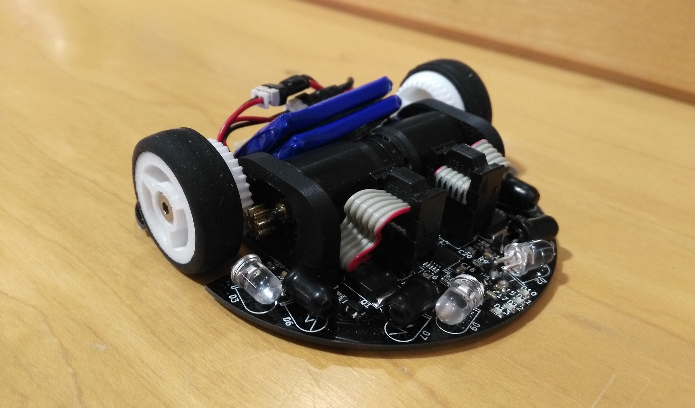
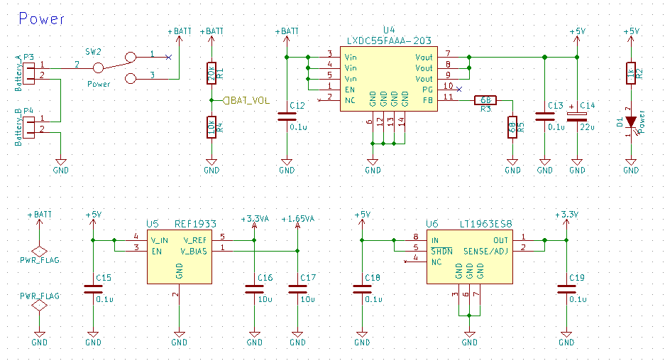
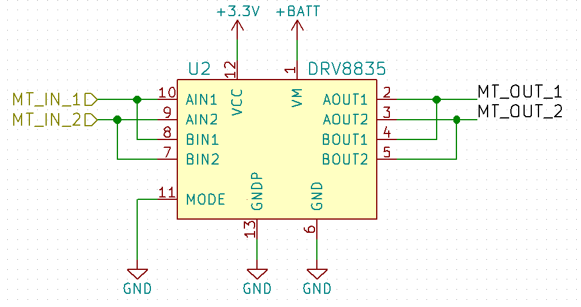
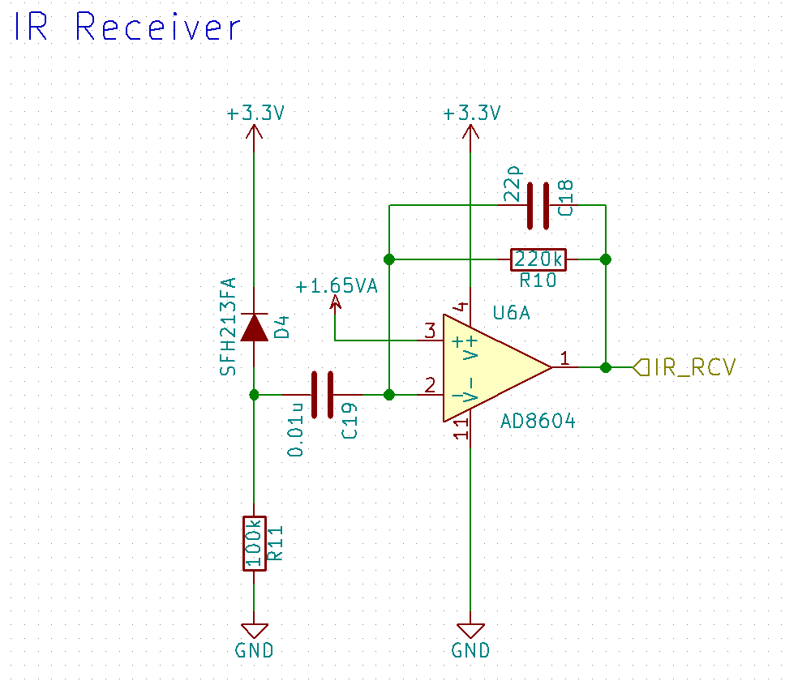
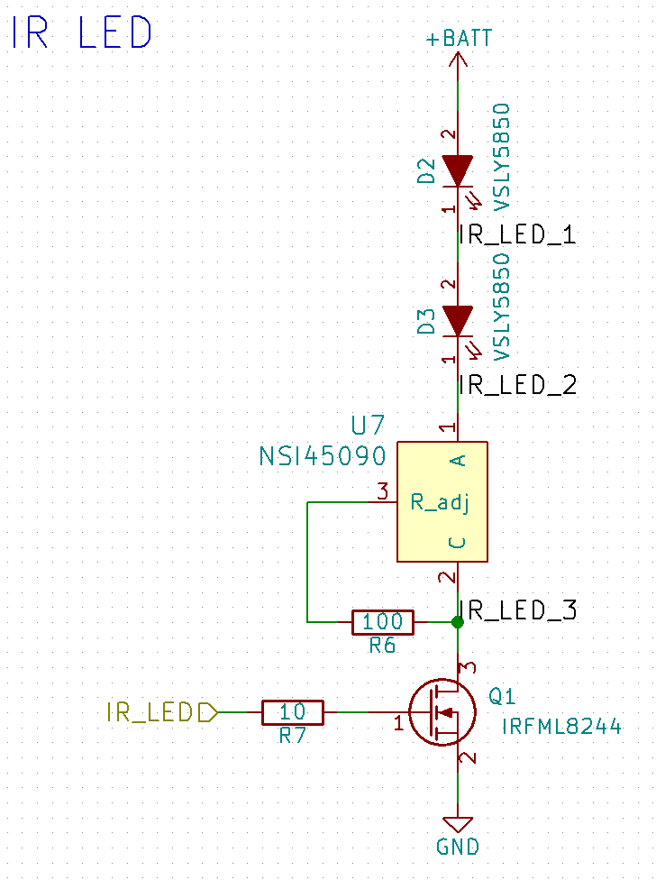
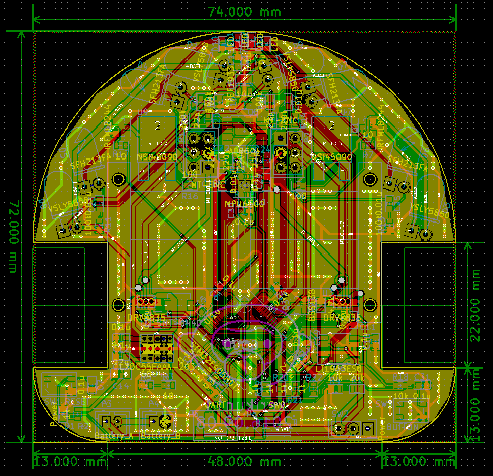
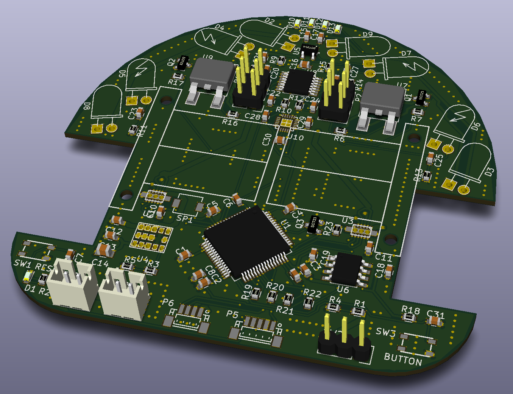
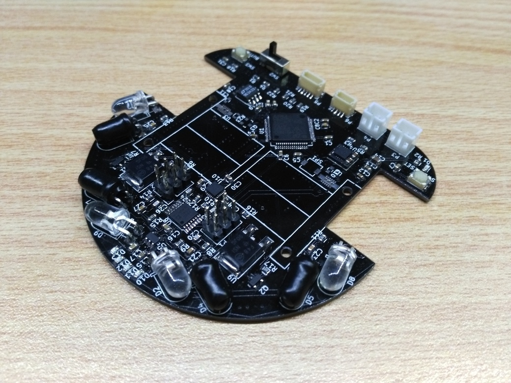

KERISE v1の設計(回路編)
概要
今年の全日本マイクロマウス大会2016に出場したKERISE v1．今回はその回路設計を紹介します．
全日本マイクロマウス大会2016の結果報告はこちら

KERISEv1
主な使用部品
部品のほとんどはdigikeyで購入しました．
| 部品 | 型番 | 備考 |
|---|---|---|
| マイコン | STM32F405RG | クロック168MHz |
| 赤外線LED | VSLY5850 | 直径5mm |
| フォトダイオード | SFH213FA | 直径5mm |
| モータードライバ | DRV8835 | 最大電流3A |
| 6軸センサ | MPU6500 | 3軸ジャイロ+3軸加速度 |
回路図
ここからダウンロードできます．
KiCadの階層機能を使って書いてみました．とても便利です．
各部位の説明
マイコン
マイコンは，STM32F405RGT6を使いました．ARMのCortex-M4が入っており高スペックです．
| STM32F405RGT6 | |
|---|---|
| 周波数 | 168MHz |
| Flash | 1024kB |
| メモリ | 192kB |
| 12bit ADC | 3つ |
電源回路
バッテリーは，3.7vのリポを2つ直列につなぐので，7.4Vです．それをDCDCコンバータで5Vに落とし，さらにリニアレギュレータで3.3Vに落とします．

電源回路
モータードライバ
モータードライバは，DRV8835を使用しました．1.5Aまで流せるHブリッジが2つ入っています．2つ並列に使えば3Aまで流すことができるらしいです．
パッケージは，12-WSONといい，0.5mmピッチで足が側面にわずかに出ているもので，はんだ付けが難しかったです．

モータードライバ
6軸センサ
6軸センサにはMPU6500を使いました．といっても，そのうちジャイロ1軸と加速度1軸の計2軸しか使っていません．
SPIでデジタルデータを得ることができるので，とても使いやすいですが，はんだ付けはカオスです．
1kHzで値を得ることができます．
フォトリフレクタ
フォトリフレクタには，指向性の高い赤外線LEDと，応答の速いフォトダイオードを使用しました．
受光回路は，オペアンプでバンドパスフィルタを作り，高周波と低周波成分をカットしています． そのため，赤外線LEDは2kHzで点滅させることで，周辺光と区別しています．この回路は先輩から教えてもらいました．
さらに指向性を高めるためにフォトダイオードには熱収縮チューブをかぶせて横側を遮光しています．

受光回路
LEDの発光回路は，定電流源ICを使い，モーターなどにより電源電圧が下がっても同じ明るさで光るようにしています．

発光回路
基板の設計
KiCadで設計します．いつも通り，自動配線をフル活用です．

基板設計

KiCadの3D表示
できた基板
Elecrowに発注して約10日で基板が届きました！

KERISEv1の基板
まとめ
はんだ付けを練習しましょう．
参考文献
次の記事